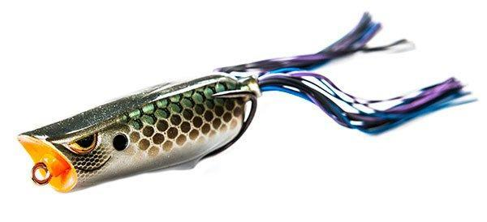

Soft Baits

This lure serves two purposes. First, they
displace more water. Secondly, they slow the spine craw's descent through the water column.

A topwater frog lure has a hollow, collapsible
soft plastic body that allows you to cast it into the thickest of weeds without getting snagged.